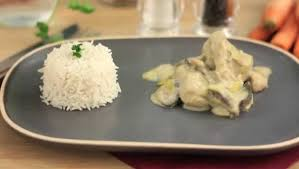

Blanquette de Veau à l'Ancienne
Blanquette de Veau à l'Ancienne
Ingrédients
- 600g d'épaule ou de tendron de veau coupé en morceaux
- 1 carotte
- 1 blancs de poireaux
- 1 petit oignon
- 1 gousse d'ail
- 1 échalotes
- 1/2 brin de céleri
- 1/2 bouquet garni
- 1/2 bouquet de persil
- 1/2 citron
- 150 g de champignons de Paris
- 2 cuillères à soupe de vin blanc sec
- 1 jaunes d'oeufs
- 50cl de crème fraîche
- 1 cuillère à soupe de farine
- 35 g de beurre
Recette
- Pelez carotte, ail, échalotes et oignon.
- Hachez ce dernier ainsi que les blancs de poireaux.
- Coupez les échalotes et la carotte en deux.
- Portez à ébullition 2 litres d'eau dans un grand faitout, plongez-y les morceaux de viande pendant environ une minute pour les blanchir (blanchir la viande permet d'éliminer les éventuelles impuretés tout en la rendant plus ferme).
- Egouttez la viande, rincez-la sous l'eau froide et jetez l'eau de cuisson.
- Replacez la viande dans le faitout rincé. Ajoutez oignon et poireaux hachés, carottes, échalotes, ail, céleri et bouquet garni. Salez, poivrez et mouillez avec le vin. Ajoutez de l'eau pour que la viande et les légumes soient immergés.
- Couvrez. Portez à ébullition et laissez cuire 1 h 30. Faites cuire dans une poêle, avec 30 g de beurre, les champignons coupés et citronnés 10 min.
- Préparez un roux blond : faites fondre le reste de beurre dans une casserole, saupoudrez-le avec la farine, mélangez vivement au fouet, puis laissez refroidir. Quand la viande est cuite, mettez-la dans une passoire avec les légumes et récupérez le bouillon de cuisson. Délayez le roux avec ce bouillon et amenez à ébullition en fouettant.
- Remettez la viande et tous les légumes dans le faitout après avoir retiré bouquet garni, ail, céleri et carotte. Ajoutez les champignons, versez la sauce et réchauffez le tout 10 à 15 mn.
- Juste avant de servir mélangez la crème et les jaunes d'oeufs, incorporez-les à la sauce en tournant sans laisser bouillir. Ajoutez quelques gouttes de jus de citron. Servez dans un plat creux avec du persil.